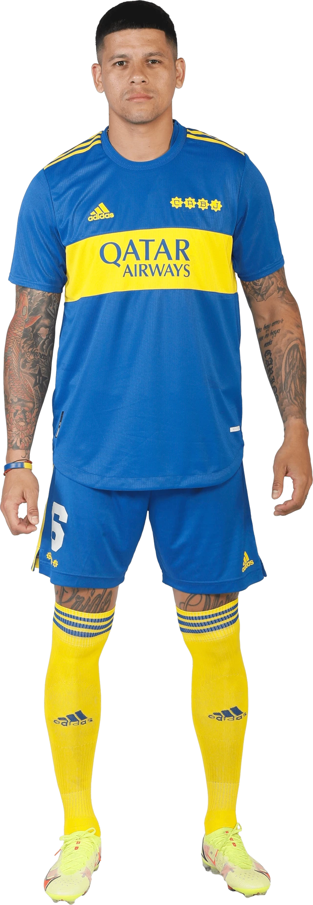

Frank Yusty Fabra Palacios is a Colombian professional footballer who plays as a left-back for Argentine Primera División club Boca Juniors and the Colombia national team. He began his career with Envigado, debuting in 2010. He joined Deportivo Cali in 2014, where he was part of the squad that won the 2015 Apertura.
Luis Jan Piers Advíncula Castrillón is a Peruvian professional footballer who plays for Argentine Primera División club Boca Juniors and the Peru national team as a right-back. A quick and offensive right-back, he can play as a right winger.
Facundo Sebastián Roncaglia is an Argentine professional footballer who plays for Boca Juniors. Mainly a central defender, he can also play as a right-back.
Sergio Germán Romero is an Argentine professional footballer who plays as a goalkeeper for Boca Juniors. He has also played for the Argentina national team. Romero made his debut with Racing Club in the Argentine Primera División in 2007 and then transferred to Dutch club AZ Alkmaar at the end of the season.
Gonzalo Agustín Sández is an Argentine footballer currently playing as a left-back for Boca Juniors.
Jorge Nicolás Figal is an Argentine professional footballer who plays as a centre-back for Boca Juniors.
Faustino Marcos Alberto Rojo is an Argentine professional footballer who plays as a defender for Boca Juniors, where he is captain.
Oscar Exequiel Zeballos is an Argentine professional footballer who plays as a winger for Boca Juniors.
Guillermo Matías Fernández, also known as "Pol," is an Argentine professional footballer who plays as a midfielder for Argentine Primera División club Boca Juniors.
Darío Ismael Benedetto is an Argentine professional footballer who plays as a striker for Argentine Primera División club Boca Juniors.
Óscar David Romero Villamayor is a Paraguayan professional footballer who played as an attacking midfielder for the Paraguay national team. He is the twin brother of Ángel Romero
Martín Ismael Payero is an Argentine professional footballer who plays as a midfielder for EFL Championship club Middlesbrough.
Esteban Leonardo Rolón is an Argentine professional footballer who plays as a central midfielder for Boca Juniors.
Miguel Ángel Merentiel Serrano is a Uruguayan professional footballer who plays as a forward for Argentine Primera División club Boca Juniors.
Valentín Barco is an Argentine professional footballer who plays as a left-back for Boca Juniors. He was included in The Guardian's "Next Generation" list for 2021.
Norberto Alejandro Briasco Balekian is a professional footballer who plays as a forward for Argentine Primera División club Boca Juniors and the Armenia national football team. Born in Argentina to an Armenian Argentine mother, he has represented Armenia internationally since 2018.
Alan Gonzalo Varela is an Argentine professional footballer who plays as a central midfielder for FC Porto.
Nicolas Orsini (born September 9, 1994) is an Argentine professional footballer who plays as a striker for Boca Juniors.
Cristian Nicolás Medina (born 1 June 2002) is an Argentine professional footballer who plays as a central midfielder for Boca Juniors.
Luis Vázquez (ARG) is a a poacher and currently plays for Boca Juniors. Luis Vázquez is 22 years old (2001/04/24) and he is 190cm tall. His preferred foot is Right. His jersey number is 38.
Luca Langoni is a Boca Juniors attacker who has taken part in the majority of their Liga Profesional Argentina games in 2023, making 12 appearances overall and playing 708 minutes. He has started in eight of these appearances across their 24 fixtures and entered as a substitute on four occasions.
Marcelo Alexis Weigandt (born 11 January 2000) is an Argentine professional footballer who plays as a right-back for Boca Juniors.